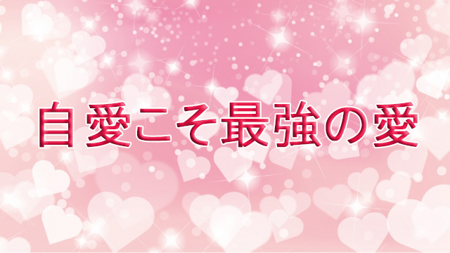

愛と敬意をもって接すること。
これが親子でも会社の人間関係、恋愛やご近所つき合いでもあらゆる人間関係をスムースに運ぶ基本原則となる。
親は子を愛し子は親を慕う。
これはとてもシンプルな家族のあり方だ。
私たちは本当は誰でも「愛し方」を知っている。私たちの内部の奥深く、存在の源には常に愛が流れていてそれがあふれ出る機会を待っている。
それなのに「自分は愛し方を知らない、冷たい人間なのか」と感じるのは、愛することに理由や根拠が必要だと思い込んでいるからだ。
彼はステキな人だから。
彼女は気立てが良いから。
あの人は有能だから。
私たちは何にでも理由や根拠を挙げなければ気が済まない。
人を好きになるのに根拠は必要なのか。我が子を愛するのに根拠は必要なのか。
そうならそれは条件付きの愛ではないか。
家族であっても素直に愛を表現できないのならそこに「条件」を持ち込んでいるからではないか。
「夫がもっと理解ある人だったら…」
「妻がもっと優しく接してくれたら…」
「子どもがもっと素直で言うことを聞いてくれたら…」
こんな風に私たちは他者に条件をつけることで、自らの愛を小出しにしながら様子をうかがっている。そこには「怖れ」の気持ちがある。私たちは誰でもが愛を拒絶された経験があるからだ。
子どものときは皆自分の愛を素直に表現していた。好きな子にはすぐ近寄って行って遊んだり手をつないだりした。人だけではない。道端の雑草をいつまでもしゃがんで眺めていたり、散歩中の犬に「ワンワンがいる」と駆け寄ったりしていた。
子どもにとって世の中は「好きなもの」であふれていた。それはつまり子どもの側から見れば自分が世界から愛されているという感覚だった。
だが、成長するにつれてその感覚は忘れられていく。誰々を好きとかカンタンに言っちゃいけない。それはマナーに反するとかふしだらだなどと言われる。動物や草花など自然の魅力に浸ることも許されない。ボーっとしていないで宿題でもやりなさいというわけだ。
自分の内側を愛で満たす
こうして私たちは自らの内からあふれる愛を封印し、意味、理由、根拠、目的といった頭でコネ回した社会的意義にとらわれてしまう。
「それをやってどんな意味があるの？」
「そう思う根拠は？」
「何のためにそんなことをするの？」
「それって役に立つの？」
私たちは四六時中こんなことを言ってるが、外側の何かではなく内側からあふれる思いの尊さと力強いパワーを忘れている。いや、むしろ愛のエネルギーが強力に回転するからこそ、社会的意義をもつ成果もあげられるのだという真理が忘れられていると言うべきか。
次々と事業を成功させている経営者。尽きることのない創作意欲でヒット作を連出するアーティスト。毎日が幸せでイキイキと暮らす近所のオバサンも、たとえていうなら子ども時代の好奇心すなわち「好きなことを追究する純粋な愛」を失っていない人なのだ。
しかし、多くの人はこれとは逆に自らの愛を開放することなく意味、理由根拠の世界に閉じこもる。そして心に空しさ寂寥感を抱えて生きている。愛の拒絶を怖れハートを閉じているからだ。こういう人が社会的に意義ある事、理由や根拠を求めることはかえって怖れを増幅してしまうだろう。
こうして自らの内に愛を感じられない人は外側に愛を求めるようになる。他者、異性、仕事、家族から「愛してもらう」ことで自らの空洞を埋めようとするがこれはうまくいかない。
なぜなら自分に価値がないから他者に愛されることで自己を証明したい、つまり自分の価値は他者次第と言ってるに等しいからだ。
そうなると他者の愛を失うまいと相手に執着してしまう。そして執着が愛だと錯覚する。
だから私たちは外側に愛を求めるのではなく、自らの内部（源）に流れる豊富な愛に気づかなくてはならない。それは私たちの内奥に脈々と流れるエネルギーの源泉だ。その愛のエネルギーは子どものころ世界をイキイキと輝かせ、自らの生命の躍動を感じさせていたものだった。
そのことを静かに思い出すこと。日頃の雑念や心配事などにわずらわされ忙しく頭ばかりを働かせることを止めて、胸のあたりに暖かな愛のエネルギーを感じてみること。
そうして愛が全身に満ちることをイメージして欲しい。胸のハートがピンクに染まりそれが全身に広がっていくような感覚でもよい。
その上で自分に労りの言葉をそっとかけて欲しい。「何だかんだと言っても、これまでの人生自分なりにガンバって来たんだな。」そういう思いで自分に優しくすること。つまり自分に愛を向けることだ。これを自愛という。
自分を愛するといっても傲慢な意味ではない。自分の内側が愛にあふれているからこそ他人にも伝わる。コップに愛の水が注がれるのをイメージして欲しい。コップは満杯となりやがて水があふれ出す。そのあふれた水が周囲に広がっていく。
他者という対象を先にもってくるのではない。自分を愛せない者が他人を愛することなどできないからだ。
自分の内側を愛で満たし、そのあふれる愛が周囲に広がり他を満たしていく。これが真に愛することだ。
私たちは誰もが「愛し方」を知っている。
ただ思い出しさえすればよいのだ。